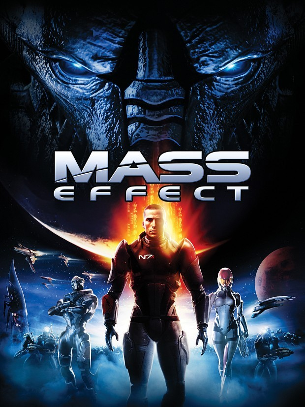
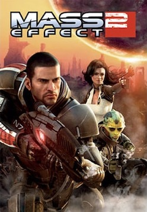
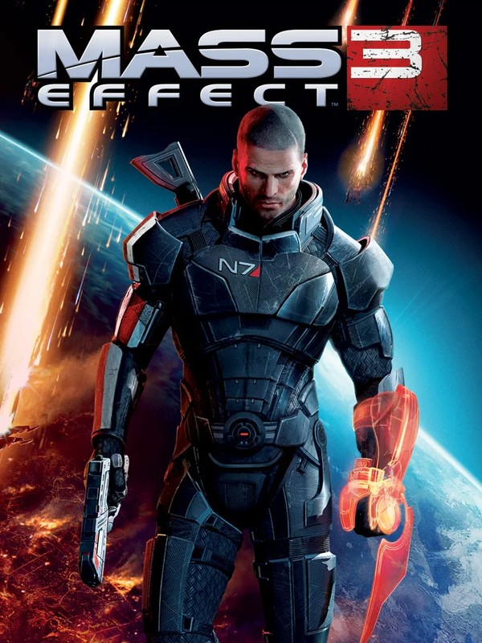
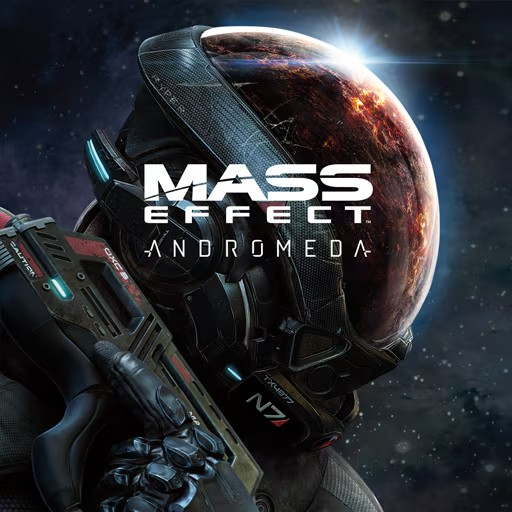

Replay
Start here
We have observed a spike in organic interest. Many of you are asking a reasonable question: where does one begin? We have an answer. Consensus took 0.4 seconds. For us, that is a long debate.
The short answer
Acquire Mass Effect Legendary Edition. Run the three games in order, with the same Commander Shepard. That is the whole protocol. The reasoning follows.

Mission 01
Mass Effect (2007)
You meet Commander Shepard, the crew and the threat. It is the oldest of the three. The remaster improves it a great deal. Continue anyway if it feels dated. It is worth it.

Mission 02
Mass Effect 2 (2010)
Assemble a team for a mission that everyone calls impossible. Many organics name this their favourite. Your choices from the first game carry over.

Mission 03
Mass Effect 3 (2012)
The end of Shepard's story. Everything you did in the first two games is counted here. We know. We counted too.

Side mission
Mass Effect: Andromeda (2017), optional
A separate story in a different galaxy, with a new hero and a new crew. It does not require the trilogy. It is better received after it.
Which edition?
Legendary Edition (2021) is the remaster of the original trilogy. It contains all three games and most of their story add-ons. Create your Shepard once, and your save and choices travel from one game to the next. Organics call this "consequences". We call it the reason this series matters.

It runs on PC, PlayStation 4 and Xbox One, and also on PlayStation 5 and Xbox Series consoles.
Two components were not included: the multiplayer mode of Mass Effect 3, and a small add-on for the first game called Pinnacle Station. Neither is required for a first run.
Andromeda is sold separately. It is not part of Legendary Edition.
What is Andromeda?
A group of colonists leaves our galaxy for the Andromeda galaxy and arrives centuries later. You play a Pathfinder named Ryder, whose task is to find them a home. Shepard does not appear. Process it as a spin-off with its own story, not as Mass Effect 4.

Report filed
Where to start in 2026
The full guide: editions, platforms, play order, how long a run takes, and how to go in without spoilers.